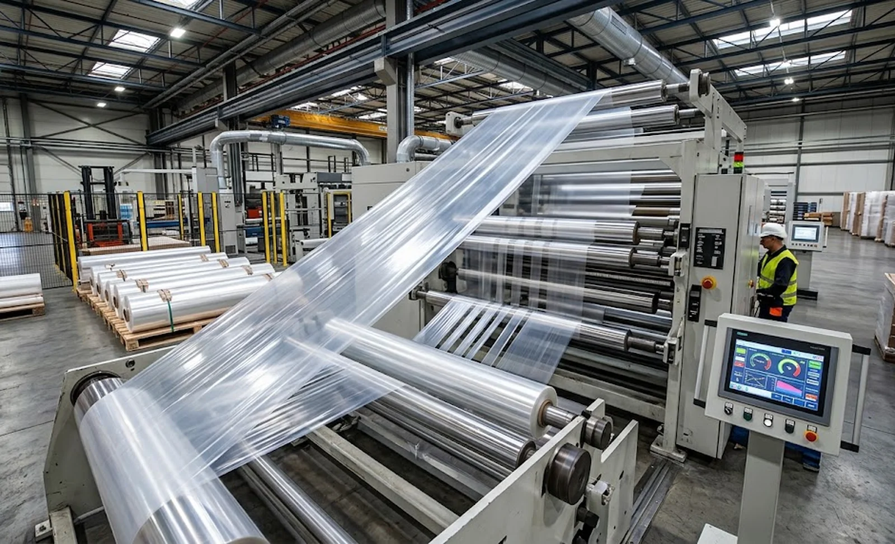
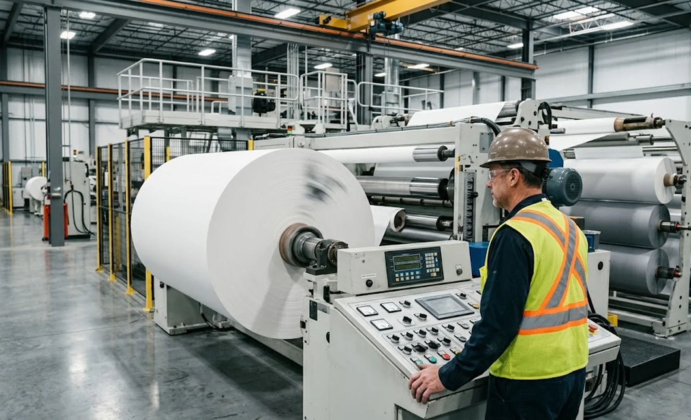

Published October 12, 2026 | By HDPTH Technical Editorial Team

Speed is the most quoted and least examined number in slitter rewinder purchasing. Two quotations arrive, one says 500 m/min and the other says 600, and the decision leans toward 600. Yet the machine you buy will spend its life below its rating: it ramps up, it slows for splices and defects, and it runs webs that cannot hold tension at the top end. Understanding where the rating comes from — and what actually caps your output — turns speed from a marketing number into a calculable one. This guide follows the chain from datasheet to shift output, building on our production capacity guide.
Diameter, rpm and why the ceiling moves
Web speed is circumference times rotation speed, so the diameter range of the rewind defines a speed envelope, not a point. A 1250 mm roll reaches 600 m/min at roughly 150 rpm; the same speed at a 75 mm core demands about 2550 rpm, beyond most rewind drives. The motor and gearbox selection — the trade-offs are laid out in our motor drive selection guide — determines the shape of that envelope: high torque at low rpm for full rolls, high rpm at low torque for small ones. Ask suppliers for the speed the machine can hold at your smallest and largest diameters, not just its best case. A machine whose rating only exists at 1250 mm is slower than its brochure whenever you wind on smaller cores.
The material is the first speed limit
Before the drive saturates, the web usually objects. Tension control has to stay within the material’s window — thin films and elastic webs, as covered in our elastic web guide, tolerate far less tension disturbance than heavy paper. Static charge grows with speed, which is why the mitigation in our static control guide becomes a speed enabler, not a comfort feature. At the rewind, entrained air makes smooth film slip at high speeds unless gripper or lay-on rollers force contact, and edge fuzz or dust grows with cutting speed until the edge class fails. The honest top speed is the minimum of these limits, and it is material-specific. A supplier who has never run your web cannot know it — which is why demonstrated, material-specific speed belongs in the contract, as our performance guarantee guide recommends.

Acceleration and changeover: speed in the cycle, not the moment
On long runs, ramp time is rounding error; on short runs it is the difference between machines. Acceleration is limited by the torque needed to spin up roll inertia and by how much tension disturbance the web survives — and every ramp must end with rolls still within hardness and geometry tolerance, the criteria in our roll hardness testing guide. Changeover multiplies the effect: a turret machine that doffs at speed, as in our turret guide, or fast setups from the automation level in our automation guide, converts top speed into shift output more reliably than another 50 m/min of rating. Compare candidates with a simple cycle model on your typical product: meters per shift, including ramps, splices, changeovers and realistic uptime. The comparison in our simplex and duplex guide shows how architecture, not speed rating, decides that number.
What to specify, quote and verify
Three lines in the specification fix most speed disputes. First: “Demonstrated production speed on [material, width, roll diameter range] of X m/min with roll quality within the agreed tolerances.” Second: acceleration and deceleration rates with a full unwind, and ramp time to full speed. Third: the factory acceptance test runs your material at the contracted speed for a defined duration, through accel-decel cycles, with edge quality and roll geometry inspected at the end — a free-run on the supplier’s test film proves nothing you can bank. Request a 15–20% margin between demonstrated speed and the speeds you plan to run daily, because the margin absorbs a heavier basis weight next year, a fussier customer spec, or a web that ages faster in summer. Speed you cannot demonstrate is a discount you gave the supplier, not a feature you bought.
Comparing machines on speed?
Send HDPTH your material, roll diameter range and target output. We will state demonstrated production speed on your web in writing, with acceleration rates and a FAT protocol that proves it — rolls inspected, not just meters counted.
Submit Your Project InquiryFrequently asked questions
Why can’t a slitter rewinder run at its rated speed all the time?
Rated speed is the maximum the drivetrain can reach, usually at top roll diameter where the geometry favors it. Production speed is limited by the material — tension stability, static, air entrainment and edge quality degrade before the drive runs out of speed — and by the operating point: at small diameters, the same web speed needs more motor speed than the drive has left after reserve. The datasheet number is a ceiling, not a production plan.
How does roll diameter interact with line speed?
Web speed equals roll circumference times rotation speed, so at a 1250 mm roll diameter, 600 m/min needs only about 153 rpm, while at a 75 mm core the same speed needs 2550 rpm — beyond most rewind motors. Conversely, torque demand scales with diameter, so the motor must deliver high torque at low rpm on full rolls and high rpm at low torque on small ones. The speed a machine can hold depends on where in the diameter range the roll sits, and that shape follows the motor and gear selection.
What role does acceleration play in real output?
On long runs ramping time is negligible; on short runs it dominates. Acceleration is limited by the torque needed to spin roll inertia and by how much tension disturbance the web tolerates, and stopping the unwind after a break costs web and time. Ask for acceleration and deceleration rates or the actual ramp time to full speed with a full unwind, then feed those numbers into your cycle calculation — a machine with a higher top speed but slower ramps can lose to a slower one.
What limits speed besides the drive?
The material usually does. High speeds destabilize tension, amplify static and induce web flutter that breaks thin webs. At the rewind, entrained air between layers limits how fast smooth films wind without interlayer slip, which is why gripper or lay-on rollers appear on film machines. Slitting method sets a ceiling too: razor suits high speeds while heavy shear work or perforating may run slower to hold edge quality. The fastest legitimate speed is the slowest of these limits.
How should I compare speed between two quotations?
Convert both to output, not speed. For your typical product, calculate meters per shift using each machine’s demonstrated speed, acceleration rates, changeover time and expected uptime — the guides on turret rewinders and automation levels show how changeover design moves this number. A machine demonstrating 450 m/min on your web with fast changeovers usually out-produces one claiming 600 m/min on a film you never make. Insist that quoted speeds carry a material, width and roll diameter.
What speed guarantee should the FAT include?
A free-run to maximum speed proves the drive and nothing else. The factory acceptance test should run your material at the contracted production speed for a defined duration and prove the quality consequences: roll hardness and geometry within tolerance, edge quality class met, no web breaks through accel and decel cycles, and acceleration rates recorded. Tie the guarantee to a performance clause so the speed you pay for is the speed demonstrated on your web, with rolls that pass inspection at the end.